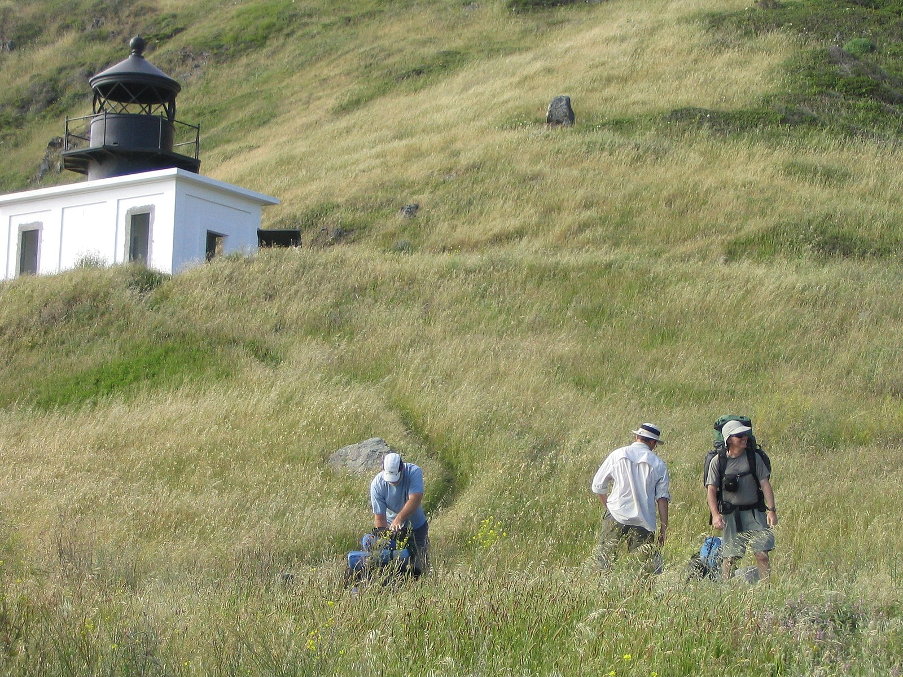
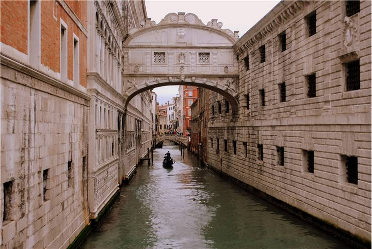
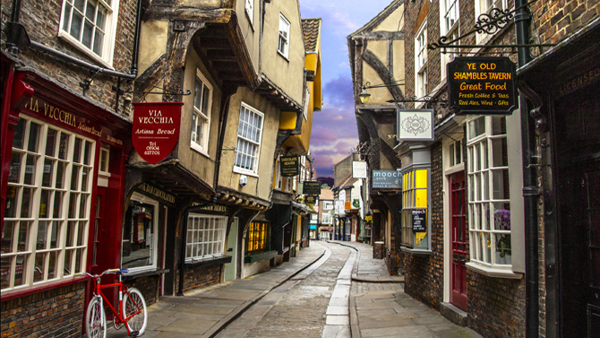

Maho Beach is located on Sint Maarten in the Caribbean. This place is special because airplanes take off and land right over the top of the beach. Imagine swimming in the ocean, you look up, and there is giant landing gear about 30 feet above your head. It is a once in a lifetime experience. Plus there is a bar not more than a few yards away with delicious rum!
Punta Gorda Lighthouse is a lighthouse in the United States, 12 miles (19 km) south of Cape Mendocino, California, within Humboldt County. Access is via a short hike from the end of a 4WD road. It is managed by the Bureau of Land Management. The Punta Gorda Light was known as the "Alcatraz of Lighthouses" because of its remote location and difficult access.
The Bridge of Sighs in Venice Italy is just off to the side of the famous Rialto Bridge and can be easily overlooked. This little bridge has a bit of a sad and dark past. The court was located on one side and would often be the place of a death sentence. Bridge of Sighs was the path walked by the condemned and was their final view of the world outside before they met their fate. The prisoner would look out the little windows one last time and let out a sigh. Thus is named the Bridge of Sighs.
Quebec City is one of the oldest European settlements in North America and the only fortified city north of Mexico whose walls still exist. It is home to the earliest known French settlement in North America, Fort Charlesbourg-Royal, established in 1541 by explorer Jacques Cartier with some 400 persons but abandoned less than a year later due to the hostility of the natives and the harsh winter.

Glenfinan Viaduct in Glenfinnan Scotland is most recognized these days for its appearance in Harry Potter as the Hogwarts train. However, it is a pivotal location in the civil war of Scotland. Bonny Prince Charles landed here when returning to claim his place as king. Not everyone was on board with this idea and war ensued.

The Shambles in York was the inspiration for Diagon Alley in Harry Potter. It is the oldest street in York as was the main road for shopping, business, and transportation.
